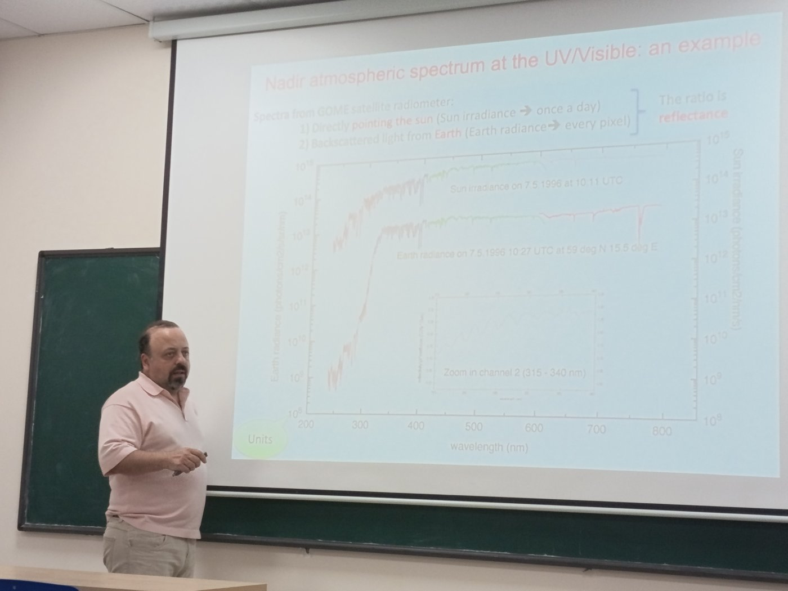
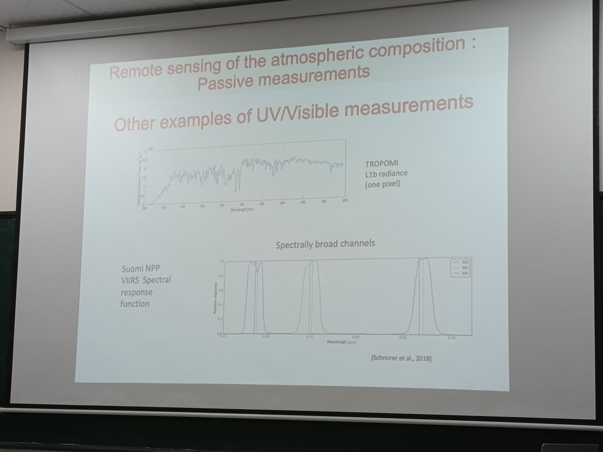
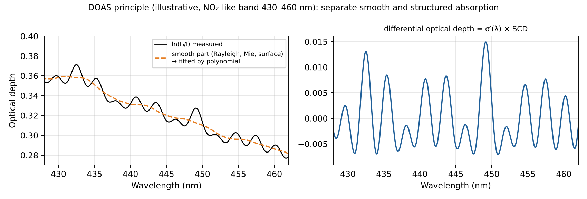
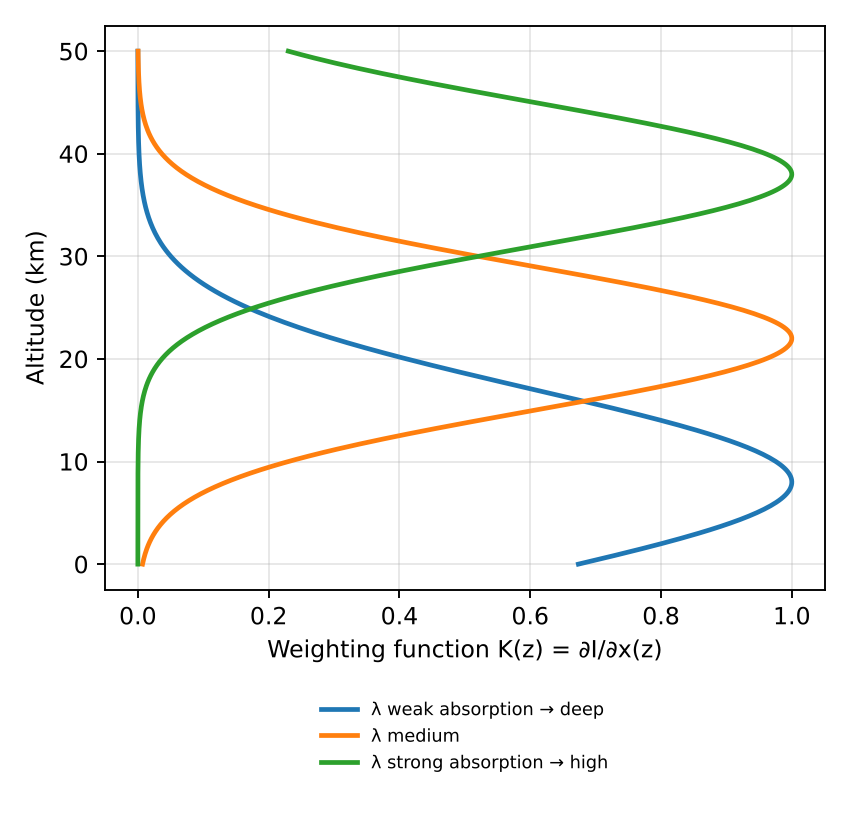
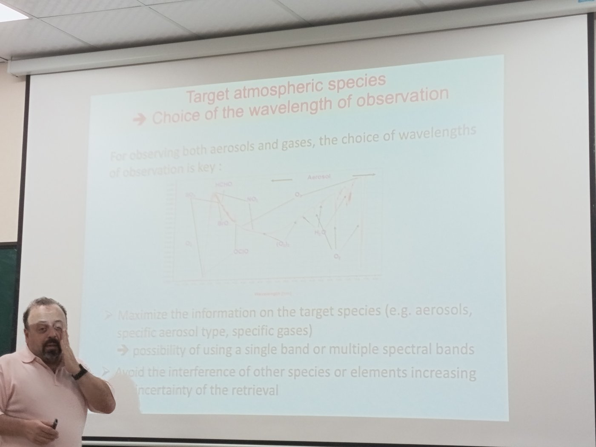
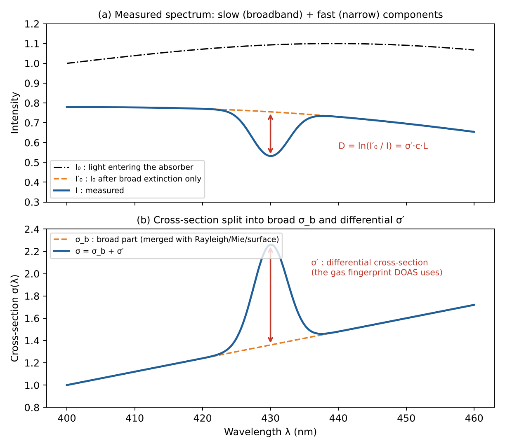

Trace-gas retrieval: column and profile
Study guide chapter 3
Measured quantity: radiance, not concentration
UV – visible – SWIR
Backscattered solar radiance → reflectance R(λ).
GOME-2, OMI, TROPOMI, OCO-2
GOME-2, OMI, TROPOMI, OCO-2
Thermal infrared
Emitted radiance, expressed as brightness temperature TB.
IASI, AIRS, CrIS
IASI, AIRS, CrIS
Occultation
Transmission I/I0 of the Sun or a star through the limb.
ACE-FTS, SAGE
ACE-FTS, SAGE
Forward model and retrieval
Forward modely = F(x, b) + ε
- y measured spectrum
- x state: the gas amount to find
- b temperature, surface, clouds, aerosols
- ε measurement error
ReflectanceR(λ) = π I(λ) / (μ0 E0(λ))
Lecture slides: GOME and TROPOMI

Figure 8: GOME — solar irradiance and Earth radiance; their ratio is the reflectance.

Figure 9: TROPOMI L1b radiance of one pixel (hyperspectral) vs broad VIIRS channels.
Total column: DOAS step 1
Spectral fit → slant columnln( I0(λ) / I(λ) ) = Σi σi′(λ) · SCDi + Σp ap λp

Figure 10: DOAS — remove the smooth part, fit the narrow structures with laboratory cross-sections.
SCD = ∫ n ds along the light path; σ′ comes from the laboratory.
Total column: AMF and VCD
Vertical columnVCD = (SCD − SCDstrat) / AMFtrop , AMF = SCD / VCD
Geometric approximationAMF ≈ 1/cos θ0 + 1/cos θ
Example θ₀ = 60°, θ = 30°
AMF = 2 + 1.155 = 3.15; SCD = 8×1015, SCDstrat = 3×1015 → VCD ≈ 1.58×1015 molecule cm−2Profile: optimal estimation
Linearisationy = y0 + K (x − x0) + ε , K = ∂F/∂x
Solutionx̂ = xa + (KTSε−1K + Sa−1)−1 KTSε−1 (y − K xa)
xa: a priori profile · Sa: its covariance · Sε: measurement-noise covariance. The problem is ill-posed, so it must be regularised.
Where does altitude information come from?

Figure 12: weighting functions peak at different altitudes.
- Absorption strength vs λ: different penetration depths
- Pressure broadening: line centre sees high, wings see low
- Temperature T(z) gives emission contrast
- Limb geometry: tangent height
Wavelength windows for each species

Figure 11 (lecture slide): wavelength windows for SO₂, HCHO, BrO, NO₂, O₃, OClO, O₂–O₂, H₂O, O₂, aerosol.
Worked example: tropospheric NO₂ column over a megacity
- DOAS fit gives a tropospheric slant column SCDtrop = 2.4×10¹⁶ molecules cm⁻²; radiative transfer gives AMFtrop = 1.2.
- VCD = SCD / AMF = 2.4×10¹⁶ / 1.2 = 2×10¹⁶ molecules cm⁻² (≈ 0.74 DU) — typical of a polluted megacity.
- If clouds or a wrong profile shape change the AMF by 30%, the VCD changes by 30% (e.g. 1.54e+16 for AMF = 1.56) → the AMF is usually the largest error source.
Figure: Figure 10 (study guide v2)

Figure 10 (study guide v2): DOAS principle — I₀, I′₀ and the differential absorption D.
Quick Q&A
Why measure the solar irradiance I₀ every day?
To remove Fraunhofer lines and instrument effects: the ratio I/I₀ is the reflectance.
Why only the differential cross-section?
Broad features cannot be separated from Rayleigh, Mie and surface effects; the polynomial absorbs them.
How does a limb spectrum change with tangent height?
Lower tangent height → more absorber and higher pressure → deeper and wider lines (lecture slide, Part A.5).
What is the Ring effect?
Filling-in of Fraunhofer lines by rotational Raman scattering; it must be fitted as a pseudo-absorber in DOAS.
Exam checklist — Chapter 3
1
Measured quantity = spectral radiance (reflectance, TB, transmission), not concentration
2
Column: DOAS → SCD; AMF from a radiative transfer model → VCD = SCD/AMF
3
Profile: forward model + Jacobian K + optimal estimation with an a priori
4
Altitude information: λ, pressure broadening, temperature contrast, limb geometry
Key points
- Measure radiance; retrieve by inverting a radiative transfer model
- Column: SCD from DOAS, then divide by AMF
- Profile: optimal estimation with a priori xa
- Altitude information from λ, pressure, temperature, geometry